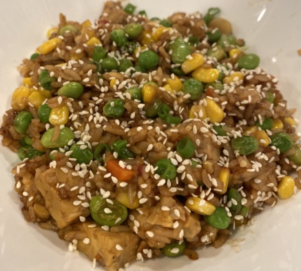

Spicy With

Description
This recipe is my go-to for a healthy, satisfying dinner. In fact, I make this recipe 2-3 times a week!
While this recipe calls for Tempeh, substituting Tofu works just as well (if not better!)
-- just don't substitute meat if you care about the wellbeing of animals! Tempeh is healthy and filling
and pairs nicely with a side of scallion pancakes (see: someone else's recipe for that).
The key to this dish, of course, is the sauce. I encourage you to try out different variations of salty,
sweet, tangy, and spicy sauces to make this dish your own. Sometimes I like to add some fat, too, if I
want to liven everything up.
Ingredients
Sauce
- 3 tbsp Coconut Aminos
- 2 tbsp Maple Syrup
- 1 tbsp Spicy Kimchi Sauce
- 1 tbsp White Wine Vinegar
- (opt) 1 tbsp Toasted Sesame Oil
Other Ingredients
- 2 servings Tempeh (I recommend Trader Joe's!)
- 2 servings White Rice
- 2 servings Broccoli
Steps
Sauce
- Steam Tempeh: Pull-apart Tempeh into bit sized pieces. Boil a small amount of water in a medium-sized
pot, and add Tempeh to steaming basket on top. Steam for 5 minutes.
- Prepare Sauce: Mix Coconut Aminos, Maple Syrup, Spicy Kimchi Sauce, and White Wine Vinegar together
in a medium-sized mixing bowl.
- Steam Broccoli: Boil approximately 3 cups of water in a small- to medium-sized pot and add frozen Broccoli.
Return to boil and cook for 3 minutes. Strain water and return Broccoli to pot to keep warm.
- Cook Tempeh: After steaming the Tempeh, head a pan over medium-low heat and spray with cooking oil.
Add Tempeh and cook until it turns a nice golden-brown color, about 5 minutes. Add sauce to pan and mix with Tempeh. Cook for several minutes,
turning off to cook all sides of the Tempeh and evenly distribute the sauce.
- Prepare Dish: Prepare dish with Tempeh, Rice (assuming this is already cooked), and steamed Broccoli. Gently salt
the Broccoli.
- Enjoy!